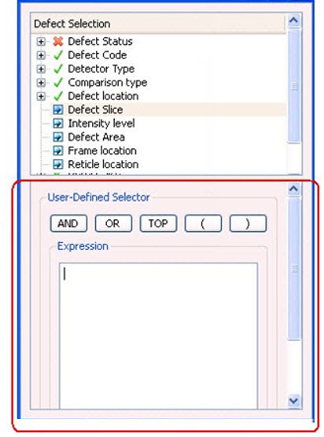

You can create
expression-based or user-defined selectors through the Calibre DefectReview GUI.
Procedure
- To create an expression-based
selector, right-click in the Filter Tree tab
of the Defect Selection window. A menu appears.
- Click Create User Selector. The User-Defined
Selector pane is displayed in the Defect Selection window as shown
in Figure 1.
The
User-Defined Selector pane contains the buttons AND, OR, TOP, ( , ),
and the display area. Other buttons such as Save, Close, Save & Close and Help are provided at the bottom
of the pane.
Figure 1. Defect Selectors With
Expression-Based Selectors